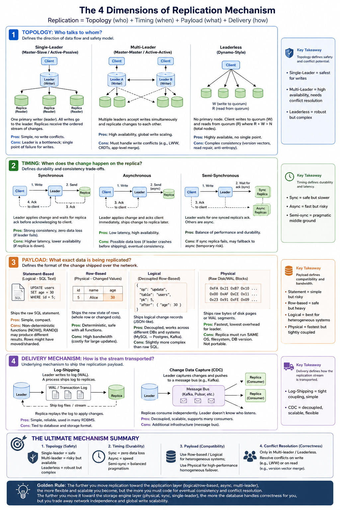

Replication Mechanism — The 4 Dimensions (Part 2)
Part 2 of the Distributed Database track. Part 1 is the Replication & Distributed Data Roadmap. This page breaks replication down as a pure mechanism, independent of any specific database:
Replication = Topology (who) + Timing (when) + Payload (what) + Delivery (how)

1. The Topology: Who talks to whom?
This defines the direction of the data flow.
Single-Leader (Master–Slave / Active–Passive)
One node is designated the primary writer. All writes go to the leader; it serializes the order of changes. Replicas pull or receive a stream of those changes in that exact order.
Mechanism: Easy to reason about — conflicts never happen at the write level. Used when you prioritize consistency over write-availability.
Multi-Leader (Master–Master / Active–Active)
Two or more nodes accept writes simultaneously. Each leader broadcasts its changes to the other leaders.
Mechanism: You must handle write conflicts (e.g. two leaders increment a counter or update the same field at the same time). Requires conflict-resolution strategies — Last Write Wins, CRDTs, or application-level merge logic.
Leaderless (Dynamo-Style)
No primary node. Any client can write to any replica. To ensure consistency, the client writes to a quorum of replicas (W nodes) and reads from a quorum (R nodes) so that R + W > N (total nodes) — guaranteeing at least one overlapping node with the latest data.
Mechanism: Relies heavily on version vectors and read-repair (fixing stale data during a read) or anti-entropy (background gossip protocols) to reconcile differences over time.
2. The Timing: When does the change happen on the replica?
This defines the durability and consistency trade-offs.
Synchronous
The leader applies the change locally, then sends it to the replica. The leader does not acknowledge the write to the client until the replica confirms it has persisted the change.
Mechanism: Guarantees strong consistency and zero data loss (if the leader dies, the replica has the data). Cost: Higher latency (waiting for network round-trips) and reduced availability (if the replica is down, the write fails).
Asynchronous
The leader applies the change locally, acknowledges the write to the client immediately, and sends the change to the replica in the background.
Mechanism: Maximizes availability and low latency. Cost: If the leader crashes before shipping the change, you lose data (durability violation) and replicas are temporarily stale (eventual consistency).
Semi-Synchronous
A pragmatic hybrid. Usually configured so that one replica is synchronous and the rest are asynchronous.
Mechanism: The client waits for ack from the leader + that one synced replica. If that specific replica crashes, the system dynamically reverts to asynchronous for that node to keep the system available — sacrificing full durability temporarily until the node recovers.
3. The Payload: What exact data is being replicated?
This defines the format of the change shipped across the network. This is the most critical architectural choice.
Statement-Based (Logical — SQL Text)
The leader ships the exact raw query, e.g. UPDATE users SET age = 30 WHERE id = 5.
Mechanism: Simple and compact. Flaws: Non-deterministic functions (NOW(), RAND()) generate different results on replicas. Also, if rows have moved (e.g. due to sharding), UPDATE ... WHERE might affect different rows.
Row-Based (Physical — Changed Values)
The leader ships the new state of the changed rows. For an UPDATE, it ships the entire new row image (or just the changed columns) for the primary keys involved.
Mechanism: Deterministic and safe. Works flawlessly with non-deterministic functions because the value is calculated once on the leader. Cost: Huge network bandwidth — an UPDATE that modifies 10,000 rows sends 10,000 row-images across the wire.
Logical (Decoupled Row-Based)
A middle ground. Instead of shipping the raw binary row (which is storage-engine specific), the leader ships a logical change record — e.g. a JSON-like payload: { "op": "update", "table": "users", "pk": 5, "after": { "age": 30 } }.
Mechanism: The gold standard for heterogeneous replication (e.g. replicating from a MySQL leader to a PostgreSQL or Kafka consumer). Decoupled from the underlying storage format, but safer than raw SQL.
Physical (Raw Disk Blocks)
The leader ships the exact binary bytes of the disk pages or WAL (Write-Ahead Log) segments that changed.
Mechanism: The absolute fastest and lowest overhead for the leader. Massive constraint: the replica must run the exact same operating system, file system, and database version, because the physical layout of data on disk is byte-for-byte identical. Used primarily for failover replicas in enterprise RDBMSs, not for general scaling.
4. The Delivery Mechanism: How is the stream transported?
Under the hood, these replication formats must be shipped. The underlying mechanism is usually one of two things:
Log-Shipping
The leader writes changes to a transaction log (WAL) on disk. A separate process reads this disk log and ships the file or stream to the replica, which replays it.
Change Data Capture (CDC)
The leader pushes the replication payload directly to a message bus (like Kafka) using an internal protocol. The replicas are consumers subscribing to that bus. This decouples the replicas from the leader entirely — the leader doesn't even know who is listening.
The Ultimate Mechanism Summary
If you design a replication system from scratch, the mechanism is a combination of these 4 layers:
| Layer | What it defines |
|---|---|
| Topology | Safety — single-leader is safe, multi-leader is risky but available, leaderless is robust but complex. |
| Timing | Durability — sync for zero-loss, async for speed. |
| Payload | Compatibility — use row-based / logical for heterogeneous systems; use physical for high-performance homogeneous failover. |
| Conflict resolution (only in multi-leader / leaderless) | Correctness — do you resolve on write (e.g. LWW) or on read (e.g. merging version vectors)? |
The further you move the replication logic toward the application layer (logical/row-based, async, multi-leader), the more flexible and scalable you become — but the more you must code for eventual consistency and conflict resolution.
The further you move it toward the storage engine layer (physical, sync, single-leader), the more the database handles correctness for you — but you trade away network independence and global write scalability.